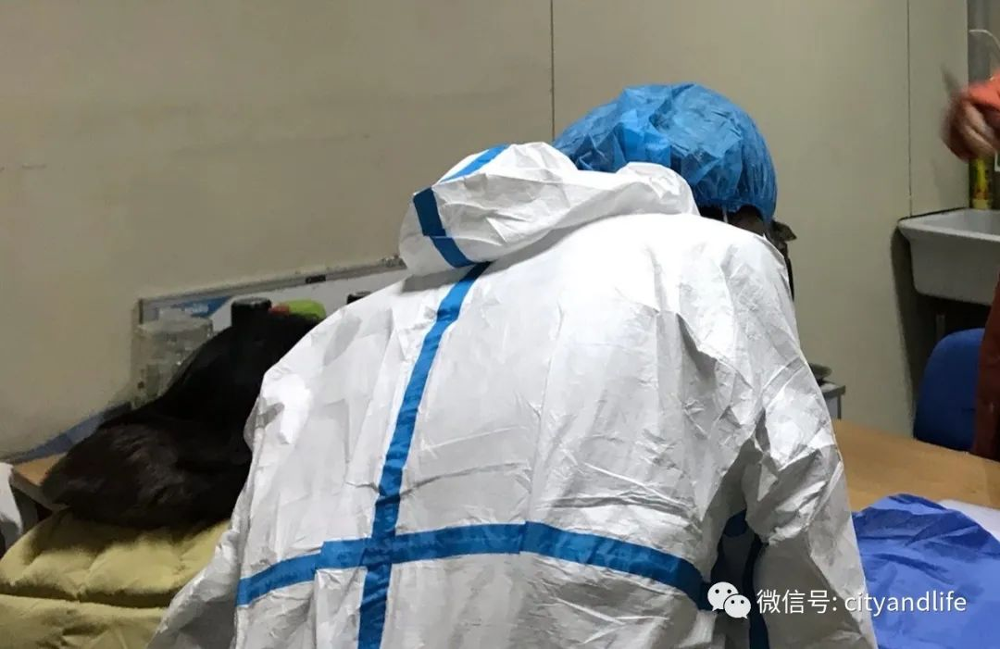

这个6岁上海小囡，用画笔成为战疫后方“小记者”！
原文链接 备份链接 小舅婆在战“疫”前线战斗，有有做了战地后方的“小记者”。画画内容的变化也悄然诉说着疫情的变化。 编者按 当很多小朋友把寒假过得快腻味的时候，有个叫有有的小朋友，却找到了一件有趣的持之以恒的事情——画抗疫漫画。 有有，大 …

经常是下午两点，护士长出去告诉挂号者，医生还没吃午饭。满满一房间的患者竟立刻安静下来，急忙为我让了一条“路”出来。

文 | 侯蔚琳
春节前，我们发热门诊突然转来一位新冠肺炎疑似者。我套上防护服，进入层流病房采集患者生命特征一手数据，并安抚其焦虑情绪。
接下来的几天，就医人数持续攀升。一天下来，光喊号喉咙就哑了。经常是下午两点，护士长出去告诉挂号者，医生还没吃午饭。满满一房间的患者竟立刻安静下来，急忙为我让了一条“路”出来。我觉得这是医患之间互相体谅的心灵之“桥”。短短几步路，却是由最为可贵的人心铺成的。当时场面非常感人，眼泪在眼眶里打转。我低下头，迅速“过桥”去扒几口饭，又回来为患者看病。
某晚下班到家，喉咙嘶哑疼痛，声音完全发不出来了。父亲说赶快量个体温看看。当看到38.1摄氏度时，心里咯噔一下。母亲立刻给全家戴上口罩。我被隔离到了家里的单间。次日一早，朝着女儿远远挥手道别，让孩子爸爸把她带去奶奶家。只是没想到，从出生到现在没怎么离开过身边的女儿，这一别竟是一个月。很长一段时间里，与女儿视频都是她和我都憋着泪，挂断之后才敢哭。好在体温第二天复原。说实话，咳得睡不着觉、腹泻出现时是会有心理压力的。唯家人、同事的支持是我最大的动力。查了胸部CT没有肺炎，很快便恢复健康，再次投入工作。
只是母亲在去年12月肾病发作，大大小小手术、拔管子需经历五六场。没想到第一场手术刚过，疫情便开始了。我在前线奋斗时，母亲肚子里、背后留置的管子都时时煎熬着她。感谢泌尿科的仲医生，精心手术，耐心答疑，让我解除了后顾之忧。晚上下班回到家里，我为手术期间不能动弹的母亲擦身，洗头，换药，熬药……
上海启动一级响应之后，我们发热门诊成为“战疫”最前线。院领导非常重视，全院的兄弟科室都来人支援我们，给发热门诊减轻了一些压力，也让我们能更迅速鉴别疑似新冠患者。隔离病房建立后，我们的疑似会诊隔离流程更加完善。医院里出了一批又一批医护人员驰援武汉，支援公卫中心。每一次离别都壮怀激烈，每一句保重都揪心不已。然而，我仍能看到胜利曙光。坚持，坚持，让我们再坚持一段时日！


征集令
阳春三月，万物复苏。在抗击疫情的战斗中，我们迎来了春天，《新民周刊》也迎来了新闻线索和故事征集的第二弹。
如今，经历了一个多月休眠的城市正在逐渐苏醒，各行各业都开始有序复工复产。
不论您是企业老板、管理者，还是普通员工；又或者，您是老师、家长，还是学生本人……我们希望了解复工复产复学过程中的困难，或暖心故事。
如果你是抗疫一线的医生护士，疫情期间拍下了珍贵的摄影作品，也欢迎联系我们投稿。
当然，抗击新冠肺炎疫情的相关故事，我们仍然欢迎。
希望广大读者朋友，提供相关线索，说出你的故事，让我们用新闻留存这一切。
《新民周刊》新冠肺炎线索征集值班编辑联系方式（添加时请简要自我介绍）：
周一：应 琛 微信号：paulineying0127
周二：金 姬 微信号：gepetta
周三：黄 祺 微信号：shewen-2020
周四：周 洁 微信号：asyouasyou
周五：孔冰欣 微信号：kbx875055141
周六：吴 雪 微信号：shyshine1105
周日：姜浩峰 微信号：jianggeladandong
✳如你需要捐赠物资，可与以下两位工作人员联系:王勇：WangYong-SH 吴轶君：rommy150708（添加时请注明“捐物资”，方便工作人员快速通过您的申请，谢谢。）
新闻是历史的底稿，你们是历史的见证者。期待你的故事、你的线索！

▼
大家还都在看这些
▼
新民周刊所有平台稿件， 未经正式授权
一律不得转载、出版、改编或进行
与新民周刊版权相关的其他行为，违者必究


原文链接 备份链接 小舅婆在战“疫”前线战斗，有有做了战地后方的“小记者”。画画内容的变化也悄然诉说着疫情的变化。 编者按 当很多小朋友把寒假过得快腻味的时候，有个叫有有的小朋友，却找到了一件有趣的持之以恒的事情——画抗疫漫画。 有有，大 …
原文链接 备份链接 有时候半夜突然想到某个可能的漏洞，惊出一身冷汗。 记者 | 黄 祺 抗击新冠肺炎疫情的紧要关头，医院不能失守。 中国疾控中心2月17日的一份研究报告显示，全国已有3019名医务人员感染了新型冠状病毒，其中包括1716 …
原文链接 备份链接 CDC表示一天能做的测试只有100个，有些力不从心。 文、图 | 李 莹 今天（3月2日）是我滞留在美第38天#详见《口述实录 | 我大年夜出发去美国自助游，直到现在还被困在旧金山》#，美国已有100例新冠病毒感染肺炎 …
原文链接 备份链接 很多时候，流调人员不像医生，患者会主动尽可能多地给医生提供有用信息。流调人员说，希望市民在经历过疫情之后，能够了解到流调的重要性，为他们将来的工作提供更多便利。 记者 | 应 琛 当大家对新冠肺炎“零号病人”议论纷纷之 …
原文链接 备份链接 文 |《财经》特派记者 金焱 发自华盛顿 编辑 | 苏琦 2020年3月6日，我打算给自己放一天的假。 算起来自从武汉疫情暴发，我在1月21采写了第一篇文章《美确诊首例新型病毒病例，或成全球性公共卫生危机事件信号》 …